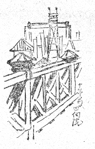
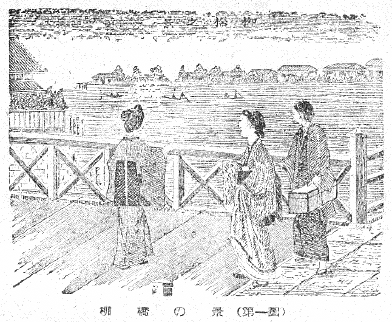
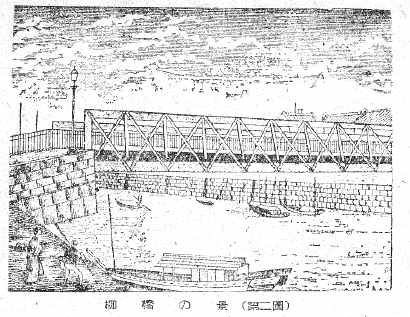
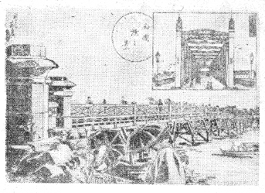

両国橋の欄干
木村荘八

柳橋の明治二十年以前木橋であつた頃は、その欄干は上図のやうな木組であつたが、これは一曜斎国輝の錦絵「両ごくやなぎばし」の図や、明治二十二年発行の「日本名所図会東京の部」（大阪府平民上田維暁編）などに写されてゐるので（第一図）わかる。明治初年彰義隊の時に油を灌いで焼かれたといふのもこの構造の柳橋であつたらう。欄干の木組が十文字のぶつちがひになつた構造は、古くは日本橋も黒塗りの木組で絵図にさう写されてゐるし、大川筋の永代橋、大橋、両国橋など皆、同じ形式で出来てゐる。目貫きの大通り筋には新橋や京橋などこの形式でないものもあつたやうだが、大体木の橋といへば、欄干の定石はこのぶつちがひだつた。――そして此の構造が幕末以前には無く、構造の基くところは外来から来たといふことは、前節の文章の中で述べた。――それが支柱の十文字は同じでも、橋材が鉄に変つて新装した姿が、第二図（東京名所案内所載）で、われわれは初めからずつとこれに見参してゐる。

柳橋の景（第一図）

柳橋の景（第二図）
僕はこの金物の柳橋の欄干に直接明治の味を感じるのだが、これは工芸部門の専門的な穿鑿から見ても、われわれ一個の独断なりカンジなりには堕ちないやうである。
柳橋が鉄橋になつてもなお両国橋は当分（明治三十七年まで）木橋のまゝでゐたが、明治二十七年版の「東京名所案内」（原田真一編）に、「両国橋は新柳町より本所元町に架す。長さ九十六間、構造すこぶる壮大なり。明治初年の築造に係る。橋下は即ち隅田川の下流浅草川なり。橋の西詰広濶の地を広小路といふ。夏月避暑に宜しきを以つて橋上に立つもの橋下に遊船を泛べるものすこぶる多く、殊に川開きと称して川中に烟火を揚るときなどの群衆雑沓は実に驚くばかりなり。」
夏は全く涼しいものであつた。川だから涼しいのは当り前といへばそれつきりのものゝ、川筋といつても、浅草橋や左衛門橋などは格別涼しい記憶が無い。柳橋が同じ神田川筋では矢張り涼しいところだつた。「東京名所案内」にもこういつてある。
「柳橋は両国を距る北数十穹神田川の咽喉に架す。此地また両国橋と同じく盛夏の避暑晩冬の賞雪皆宜しく都下第一の称あり。故を以つて酒楼茶店簷を並べ綺羅叢をなす。」
川風にも文字通りそれが涼しい川風と、格別でもないただの風とがあるものだらう。恐らくは地形からもさうなつたゞらうが、大川筋は川の流れが海から見ると大体北上して来て、両国橋のところから心持東へと進路を転じてゐる。それで水勢が上げるにも引くにもぶつかるから、本所横網町の川岸一帯には水勢をよける乱杭が一杯に打つてあつたものだ。百本杭といつて、われわれ子供にはこれは願つても無い陸釣りや蟹つりのスタヂアムだつた。
そんなわけで川筋が大うねりを見せる一つの急所に当るから、両国橋やこれに伴ふ柳橋の地形は水を渡る風も涼しく吹く――のではなかつたかと、素人考へにそんなことを思ふ。歌にも「夏の涼みは両国……」のときまりにいひ、「川風寒くちどり啼く」とはまた違つた風が吹き渡つたやうに思ふのである。この「ちどり啼く」川岸の雪の夜の連想は、両国よりも川下か（浜町から大橋へかけて）あるひはずつと川上（向島）が似合ひだらう。
夏の夜――十二時かれこれに店が閉まるのをかんばんといつた。そのかんばんになると、ぼくはよく家にゐる佐太郎あるひは政どんといふものと、佐太郎は二番板の牛切り、政どんは御飯たきであつたが、これと両国橋まで出かけたものだつた。尻をくるりとまくつて大方暗くなつた両国の広小路を駆け出したものだ。それでもまだ広小路には夜空にぼうぼうとカンテラかアセチレンガスか、そんなものをとぼして、ゴム管の蓄音器屋などが店をしまはずにゐた。われわれは両国橋へ着くと、きまつて、その欄干へ登つたものであつた。そして川風の涼しさを満喫した。満喫もおろか、からだ中が橋の上へ出るともう涼風の中に融けてしまふやうだつた。そこで佐太郎は殊に欄干――といふよりもその手すりの上へ、大の字にねるのが得意でもあり、楽しみでもあつたやうだ。当時佐太郎は二十そこそこの若い衆だつたらう。
ぼくはしかし手すりの上へのぼることだけは、その佐太郎にも、佐太郎より老年の政どんと一緒の時にも、かたく禁じられて、手が出なかつた。今思へばこれは店のものが危険を防止してゐたわけに違ひない。――政どんには（この前額の抜け上つていつも顔にひげの跡の青い、襟付きの縞物の半纏を引つかけた中老は、美声だつた。ぼくはこの政どんと十日に一度位は必ず寄席へ、色ものの立花家か、義太夫の新柳亭かへ、行つたゞらう。）、両国橋の欄干へよつかゝりながら、政どんが一節づつ先きにうたつて、「赤牛のいふこと聞けば……」という大津絵を二三日続けて習つたことがある。その歌は今でもその時の節通り覚えてゐる。
ぼくは小学校の、まだ高等科ではなかつたやうである。――そのくせぼくは煙草をのんでゐた。細巻きの大江戸といふ煙草が好きだつた。
ぼくは最近になつてから、当時佐太郎のいつも大の字にねそべつて川風に吹かれた両国橋の欄干は、どういふものだつたらうかと、先づ記憶をたどつて見るけれども、よくわからない。それから古い写真や絵をさがすことを始めると――これが却々手に入らないのだ。かれこれ思ひ立つてから小十年は経つたゞらう――やつとたんのう出来る材料が手に入つたが（第三図）、この明治卅一年七月十日印刷云々とある大阪の古島竹次郎名義の「吾妻土産名所図会」とある石版刷の絵本が、一番はつきりとぼくの求める材料を写してゐた。そしてこの絵から推して考へもし、目をつむつて少時の実感を回想するのは、佐太郎の大の字にねたのは、橋詰にある石の手すりの部分だつたかもしれないといふことである。欄干は川中へかゝつてからは木になつてゐるが、この木の手すりの上へ大の字にねたのではなかつたやうに思はれる。佐太郎はいつも非常に楽々とねてゐた。……しかし遂にこれは、佐太郎に今再びあつてよく聞き正さないことには、もうわからぬことになつてしまひさうだ。

両国橋の景（第三図）
否わからなくなるのはそればかりではない。両国橋の欄干そのものさへも――あれほど昔日夜親しかつたものが――危ふくわからなくなりかけてゐた。
欄干は川面から何間位の高さだつたものだらう。ある両国大花火の錦絵などで見ると恐しくそれをアーチ形に高く描いたものがあるが、あれは間違ひである。別の永代橋または新大橋の写真などから見ても、第三図の人と欄干の大きさの割合は当を得てゐる。（第三図の署名には応需春孝印、とある。右上は吾妻橋。）
ぼくの兄貴（木村荘太）などは、夏の水練場通ひに、こゝから水着のまゝさかで大川へ飛び込んで、浜町の伊東まで、流れたことがよくある。――一度は花火の時に、この欄干が中程から人出の重圧に折れて、大分怪我人を出したことなどあつた。その事件の明くる日のぼくの記憶は、橋詰の左右の空地に――第三図でいへばコーモリをさした女のゐるあたり一面――下駄や草履が山と積まれた奇観であつた。
その同じ奇観はまたいつも毎年出水の時には、似たやうな状態が繰り返されたものだつたが、川の水かさのこんもりと増した急流の中を、ぐるぐる回りながら馬が流れて行くのを見たことがあつたし、大きな藁ぶき屋根も流れて行くのを見たし、岸近くの水中には、ワラだの草だのゴミだの、逆さになつた下駄やごみとりなどがらくたが一杯たまつて、岸の近くはゆるゆる流れながら、その流れるものゝ上にまた一杯に小さい真青な雨蛙が乗つてゐた。
第三図は橋詰の南寄りであるが、この反対側の北寄りには、一劃の砂利置場を隔てゝ、蔵造りの寄席の新柳亭がその一角だけ川中へ突出してゐたのは面白い風致だつた。その後東京にはかういふ不規則の面白い風景はどこにも無くなつた。――そしてこれもやはり風致が無くなるとともに追々その記憶や、描写や、卑近にはその写真や……さういふものも、どしどし無くなつて行くだらう。大水の川の中を流される無数の雨蛙の運命と同じものかも知れぬ。
●表記について
- このファイルは W3C 勧告 XHTML1.1 にそった形式で作成されています。